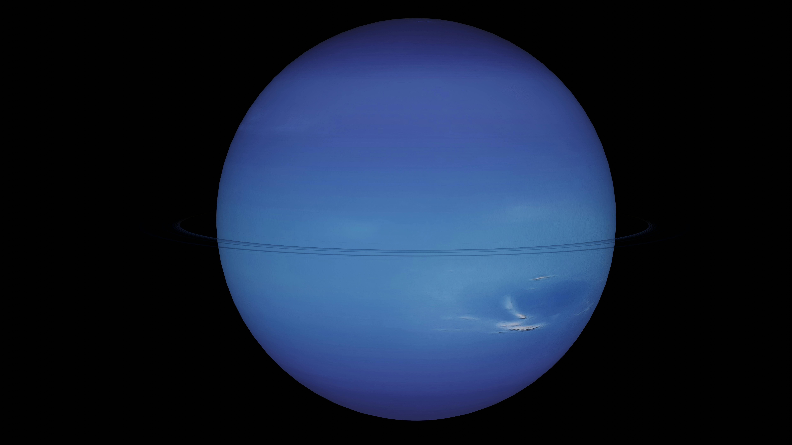

Penjaga perbatasan Tata Surya. Dunia biru safir murni yang diselimuti oleh angin badai supersonik dan geiser nitrogen beku di bulan Triton.
Jarak dari Matahari
4.5 Miliar KM
Kecepatan Angin
Up to 2,100 KM/H
Durasi Orbit
165 Tahun Bumi
Suhu Atmosfer
-214°C
Neptunus adalah raksasa es terjauh di Tata Surya dengan atmosfer yang didominasi gas metana, membuatnya tampak biru terang. Planet ini memiliki fenomena ekstrem: kecepatan angin mencapai \(2.400\) km/jam (tercepat di Tata Surya), memiliki satu tahun yang setara dengan \(165\) tahun Bumi, dan diperkirakan mengalami hujan berlian.
Kecepatan Angin Supersonik: Badai dan hembusan angin di planet ini berhembus hingga \(2.400\) km/jam, memecahkan rekor sebagai angin paling ganas di seluruh Tata Surya.
